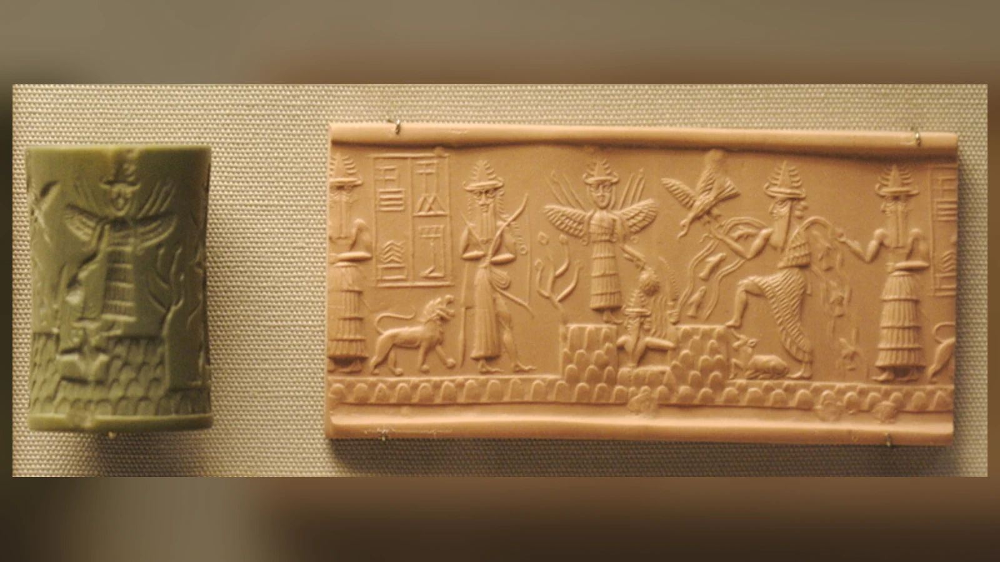
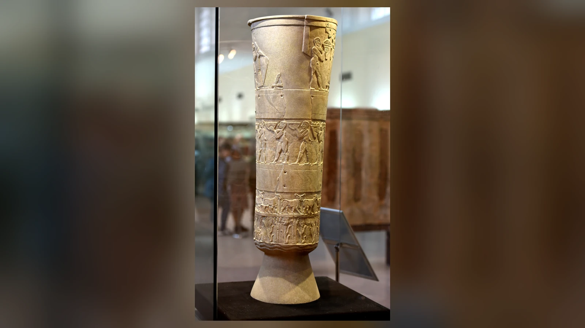
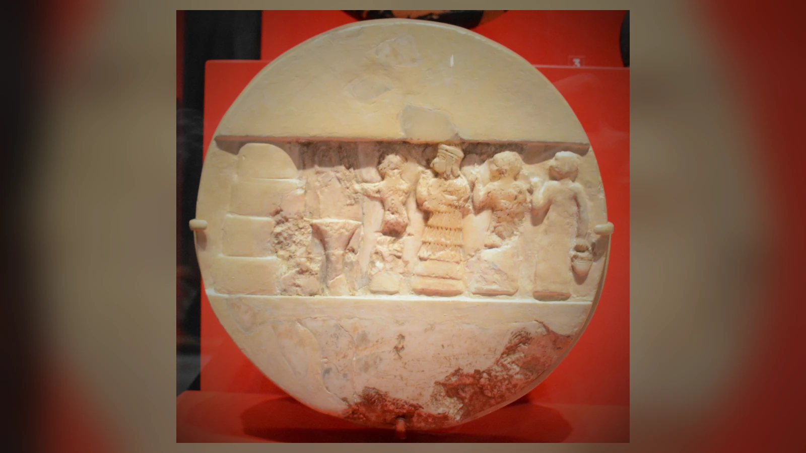
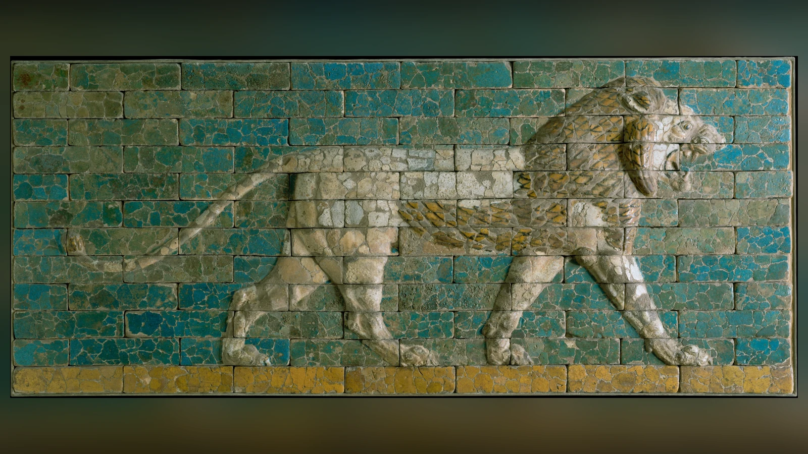
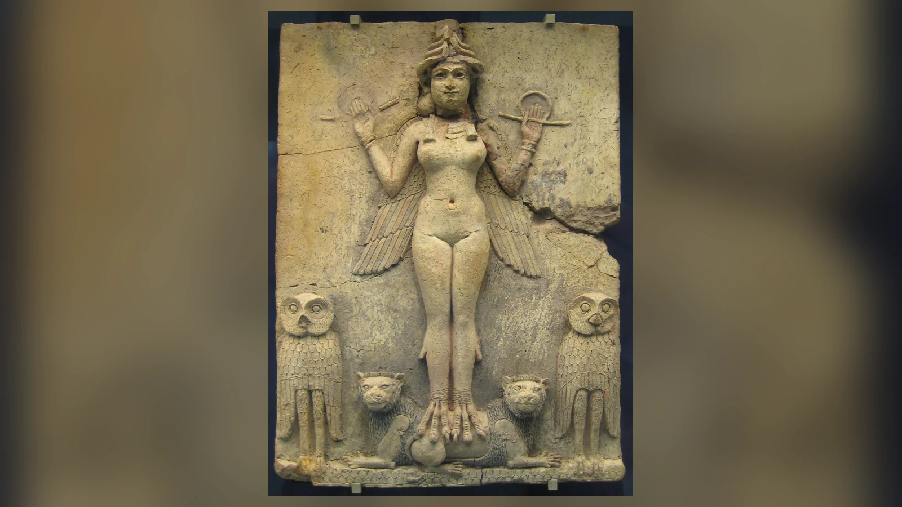

Eridu’dan ayrılan kayık, bir yolcudan fazlasını taşıyordu. Sümerce İnanna ve Enki anlatısında İnanna, bilgelik tanrısının şöleninde elde ettiği krallık, zanaat ve tören güçlerini Uruk’a götürür. Enki içkinin etkisinden sıyrılıp verdiklerini geri istediğinde kayık çoktan yola çıkmıştır. İnanna, onun yardımcısının önünü kesme girişimlerine karşı sözünden dönen tanrının kararını sorgular ve yolculuğunu sürdürür. Uruk’un tanrıçası bu hikâyede kendisine verilenle yetinen bir figür değildir; kenti adına yetki kazanan, onu savunan ve başka bir merkezin üstünlüğüne meydan okuyan kişidir.
İnanna ve İştar, Mezopotamya’da aşk, cinsellik, savaş, siyasal kudret ve Venüs gezegeniyle ilişkilendirilen büyük tanrıça geleneğinin Sümerce ve Akadca adlarıdır. Zamanla birbirleriyle özdeşleştirilmişlerdir; ancak isimlerin, kült merkezlerinin ve edebî geleneklerin tarihsel gelişimi bütün dönemlerde tamamen aynı değildir. Sümer kentlerindeki İnanna, Akadca konuşan Babil ve Asur çevrelerinde İştar adıyla genişleyen, farklı yerel özellikleri bünyesinde toplayan bir ilahî kişiliğe dönüşür.
İnanna’nın kendinden emin tavrı, başka bir şiirde ölüm ülkesinin yedi kapısında sınanır. Orada krallığın giysilerini ve yetki işaretlerini kaybederek öldürülür; kurtulabilmesi başkalarının yardımına bağlıdır. Bu iki anlatı arasındaki uzaklık, tanrıçanın neden yalnız “aşk tanrıçası” diye anlaşılamayacağını gösterir. Tapınak kayıtları, ilahiler, kraliyet yazıtları ve mühürler de aynı çeşitliliği korur: sevgili, savaşçı, kent koruyucusu ve göksel ışık, onun farklı çağlarda öne çıkarılan yüzleridir. Bunları birleştiren temel gerilim, hayatı harekete geçiren gücün aynı zamanda düzeni sarsabilmesidir.
İnanna ve İştar Kimdir? İki Adın Ardındaki Tarih
İnanna adı Sümerce metinlerde çok erken dönemlerden itibaren görünür. Yazımı ve kökeni üzerine çeşitli görüşler bulunmakla birlikte yaygın etimolojik açıklama onu “göğün hanımı” anlamına yaklaştırır. Bu açıklama kesin ve bütün ayrıntıları çözülmüş bir dilbilimsel sonuç değildir. İştar ise Akadca kullanılan addır; eski Sami tanrıça gelenekleriyle ilişkisi ve İnanna’yla tarih içinde özdeşleşmesi, basit bir kelime çevirisinden daha karmaşık süreçtir. ORACC’ın Mezopotamya Tanrıları projesi, iki adın ortak tanrıça geleneğini ifade ettiğini fakat erken tarihsel gelişimlerinin ayrı izler taşıdığını özellikle belirtir.
Sümerce ve Akadca aynı dilin iki lehçesi değildi. Sümerce dil ailesi bakımından yalıtık kabul edilir; Akadca ise Sami dil ailesindendir. Mezopotamya’da bu dillerin uzun süre yan yana bulunması, dinî kavramların, tanrı adlarının ve edebî eserlerin birbirini etkilemesini sağladı. Bir Sümer tanrısının Akadca bir adla karşılanması bazen doğrudan eşleştirmeydi, bazen de ayrı yerel geleneklerin uzun sürede birleşmesiydi. İnanna-İştar ilişkisi ikinci durumun zengin örneklerinden biridir.
İnanna’nın Uruk’taki güçlü varlığı, Erken Hanedanlar döneminin tanrı listeleri ve daha sonraki Sümer edebiyatı, bu tanrıçanın yalnız Babil çağında ortaya çıkmadığını gösterir. Akad İmparatorluğu döneminde İştar adı siyasi ve askerî ideolojide iyice belirginleşir. Birinci binyıl Asur kralları için Ninova ve Arbela İştarları özellikle önemli hâle gelir. Bu uzun çizgi, tek bir tanrıçanın “hiç değişmeyen özellikleri” olarak değil, ortak bir kimliğin farklı kentlerde yeniden yorumlanması olarak okunmalıdır.
İştar’ın farklı şehirlerdeki biçimleri birbirinden kopuk tanrılar olarak da görülemez. Antik yazıcılar ve ibadet eden topluluklar bu yerel görünümleri aynı geniş ilahî dünyanın parçaları sayabiliyordu. Buna karşılık bir Asur savaş kehanetindeki İştar ile Uruk’taki aşk şiirlerinin İnanna’sının bütün ayrıntılarını eşitlemek, kaynakların gösterdiği çeşitliliği siler. Aynı isim ailesi altında kült, siyaset ve edebiyatın değişen ihtiyaçları bulunur.
Uruk, Eanna ve Tanrıçanın Kentle Kurduğu Bağ
İnanna’nın en eski ve etkili merkezlerinden biri Güney Mezopotamya’daki Uruk’tu. Kentin Eanna adıyla bilinen kutsal alanı, onun kültünün ve şehir kimliğinin önemli parçasıydı. Eanna adı “gök evi” anlamıyla açıklanır; ancak alanın uzun arkeolojik tarihi, yapılarının tek bir döneme veya tek bir kullanım biçimine indirgenmesine izin vermez. Uruk’un erken anıtsal mimarisi, kentleşme ve tapınak ekonomisi tartışmalarında merkezi yere sahiptir.
Tanrıçanın şehirle ilişkisi, bugün bir yapının “sahibi” olmasından çok daha genişti. Tapınak çevresinde arazi, üretim, adak, tören, görevliler ve yönetim faaliyetleri birbirine bağlanıyordu. Tanrının veya tanrıçanın kentin koruyucusu olması, topluluğun kendisini ilahî bir düzenin içinde düşünmesini sağlıyordu. İnanna’nın Eanna’sı da Uruk’un dinsel ve siyasal görünürlüğünü şekillendiren kurumlardan biriydi.
Sümerce İnanna ve Enki anlatısında Uruk’un öne çıkması rastlantı değildir. Tanrıça Eridu’dan aldığı meleri, yani toplumsal ve kutsal düzenin çeşitli güç ve kurumlarını Uruk’a taşır. Böylece mit, şehirler arasındaki kültürel üstünlük iddiasını bir tanrısal aktarım hikâyesine dönüştürür. Bir kentteki tapınağın gücü yalnız ibadetin nerede yapıldığını değil, uygarlığın düzenini kimin temsil ettiğini de anlatır.
İnanna’nın başka merkezleri de vardı. Zabalam, erken Sümer geleneğinde onunla ilişkilendirilen kentler arasındadır. Akadca İştar’ın kuzeydeki varlığı ise özellikle Ninova ve Arbela gibi Asur merkezlerinde güçlü bir siyasal karakter kazanır. Bu şehirlerde İştar, hükümdarın savaşta destek aldığı, zafer ve egemenlik beklentilerini yönelttiği ilahî otoriteydi. Kentler arasındaki fark, tanrıçanın bazı yönlerinin farklı tarihsel şartlarda öne çıkarılmasına yol açtı.
Uruk’ta bulunan ve bugün müzede korunan ünlü Uruk Vazosu, tanrıça kültüyle ilişkilendirilen erken ritüel tasvirlerini anlamak için önemlidir. Üst kuşakta tanrıçanın simgesi sayılan demet biçimli işaretlerin yanında bir figür ve sunu alayı görülür. Bununla birlikte çok eski bir görselin her ayrıntısını kesin bir tören tutanağı gibi açıklamak mümkün değildir. Eser, İnanna’nın erken kent yaşamındaki yerini göstermesi bakımından değerlidir; daha sonraki aşk ve evlilik mitlerinin bütün sahnelerini doğrudan resmettiği iddia edilmemelidir.
Vazonun yatay kuşakları, bu ilişkiyi gözle görülebilir bir düzene yerleştirir. Altta bitkiler ve hayvanlar, onların üzerinde kaplar taşıyan çıplak erkeklerden oluşan bir sunu alayı, üstte ise kutsal alanla bağlantılı karşılama sahnesi vardır. Üst kuşaktaki kadın İnanna’nın kendisi veya onu temsil eden bir görevli olarak yorumlanır; yanındaki kamış demeti biçimli işaretler tanrıça kültüyle ilişkilendirilir. Böylece tarımsal ürünlerden törensel sunuya doğru ilerleyen bir bütün kurulur. Yaklaşık MÖ 4. binyıl sonuna tarihlenen eser, birkaç bin yıl sonraki Babil kabartmalarından daha yalın bir görsel dil kullanır. İnanna’nın kentle bağı burada savaş sahnesiyle değil, ürünlerin kutsal merkeze taşınmasıyla görünür olur.

Aşk, Cinsellik, Savaş ve Venüs Neden Aynı Tanrıçada Buluştu?
İnanna ve İştar’ın aşk tanrıçası diye tanınması doğrudur, fakat “aşk” sözcüğü tek başına yeterli değildir. Sümerce aşk şiirlerinde arzu, bedensel yakınlık, sevgiliye sesleniş ve toplumsal refah beklentisi iç içe geçer. Bu metinlerde Dumuzi ile ilişki öne çıkar. Tanrıçanın cinsellikle bağlantısı modern romantik sevgi fikrinin sınırlarını aşar; arzu ve çekicilik, insan hayatının düzenlenmesinde etkili ilahî güçler olarak düşünülür.
Savaş yönü de aynı derecede eski ve güçlüdür. İnanna ve Ebih şiiri tanrıçayı savaş silahlarıyla, korku uyandıran kudretle ve kendisine boyun eğmeyen dağa yönelttiği öfkeyle anlatır. Buradaki savaş, aşk şiirlerinin yumuşak bir tamamlayıcısı değildir. İnanna düşmanını bastıran, düzen kuran ve saygı talep eden ilahî güçtür. Birbirine karşıt gibi görünen bu iki alanın aynı tanrıçada toplanması, Mezopotamya mitolojisinin tek işlevli tanrı kataloglarından ibaret olmadığını hatırlatır.
İnanna/İştar’ın göksel karşılığı Venüs’tür; gün doğumundan önce doğuda ya da gün batımından sonra batıda görülen parlak gezegen, sabah ve akşam yıldızı olarak tanınır. Bu bağlantı aşkı anlatan modern bir benzetme değildir. İddin-Dagan için yazılmış Sümerce ilahi, tanrıçanın akşam göğünde yükselişini savaşçıya benzetir ve insanlarla hayvanların onun ışığı altında günlük düzenlerine döndüğünü anlatır. Burada göksel görünürlük, toplumsal hayat ve krallık aynı şiirde birleşir. Yine de İnanna’nın bütün maceralarını Venüs’ün hareketlerinin şifreli anlatımı saymak için yeterli kanıt yoktur; göksel bağlantı açıktır, her mitin astronomik açıklaması ise ayrıca gösterilmelidir.
Sekiz köşeli yıldız, özellikle daha sonraki Mezopotamya ikonografisinde İştar’la güçlü biçimde ilişkilidir. Aslan ise savaşçı yönünün belirgin hayvan simgesidir. Silahlar, omuzlardan yükselen silah betimleri ve boynuzlu ilahî başlık da tanrıçanın görsel tanınmasında rol oynar. Ancak tek başına bir yıldız veya aslan gördüğümüzde her zaman İştar’ı teşhis etmiş olmayız. Eserin tarihi, bulunduğu yer, yazıtı ve öteki işaretleri birlikte değerlendirilmelidir.
Aşk ile savaşın bir arada bulunması için tek ve kesin psikolojik açıklama aramak da gereksizdir. Tanrıça kimi metinlerde hayatı ve çekimi güçlendirirken başka metinlerde yıkıcı kudret taşır. Bu farklılık, onu tutarsız bir karaktere dönüştürmekten çok, antik toplumların gücü hem üretken hem tehlikeli yönleriyle kavramasına imkân verir. İlahi güç insan yaşamını koruyabilir, ancak insanın denetimine bütünüyle girmez.
Tanrıçanın Ailesi: An, Nanna, Utu ve Erişkigal
Mezopotamya mitolojisinde tanrıların aile ilişkileri sabit bir soy ağacına sığmaz. İnanna bazı metinlerde gök tanrısı An’ın kızı olarak anılırken başka geleneklerde ay tanrısı Nanna/Sîn’in kızı ve güneş tanrısı Utu/Şamaş’ın kardeşi olarak karşımıza çıkar. Bu farklılıkların varlığı, metinlerden birinin mutlaka “yanlış” olduğu anlamına gelmez. Yerel tanrı düzenleri, ilahiler ve siyasi kültler farklı akrabalık ilişkilerini vurgulayabilir.
Erişkigal, Sümerce yeraltına iniş anlatısında İnanna’nın ablası olarak yer alır. Yeraltı ülkesinin hâkimidir; onun yetkisi İnanna’nın göksel ve yeryüzündeki konumundan farklıdır. İki kardeş arasındaki ilişkiyi modern aile dramına dönüştürmek kolaydır, fakat anlatının temel çatışması yeraltı ülkesinin kuralları ve sınırları çevresinde gelişir. İnanna’nın yüksek statüsü, Erişkigal’in ülkesinde ayrıcalık sağlamaz.
Dumuzi ise İnanna’nın sevgilisi veya eşi olarak anılan çoban tanrıdır. Akadca Tammuz adıyla da bilinir. Onunla ilgili aşk şiirleri, krallık ideolojisi ve ölüm ağıtları birbirinden farklı metin topluluklarına yayılır. Dumuzi’yi yalnız İnanna’nın romantik partneri diye tanıtmak, tarımsal üretim, sürüler, toplumsal bereket ve yas bağlamlarını görünmez kılar.
Enki/Ea’nın İnanna’yla ilişkisi de bütün metinlerde aynı akrabalık şemasına yerleştirilemez. İnanna ve Enki anlatısında Enki, melerin kaynağı ve onları tanrıçaya veren figürdür; metnin kendi söyleyişinde baba-kız hitapları görülebilir. Buradan bütün Mezopotamya için kesin bir soy tablosu kurmak uygun olmaz. Mitolojik akrabalık çoğu kez yetki, yakınlık ve hiyerarşi ilişkilerini de anlatır.
Tanrıçanın aile bağlarını karşılaştırmak bize Mezopotamya inançlarının durağan bir sistem olmadığını gösterir. Farklı çağlarda düzenlenen tanrı listeleri, ilahiler ve anlatılar ortak figürleri yeniden ilişkilendirmiştir. Bu durum araştırmacı için güçlük yaratır, fakat tarihsel gerçekliğin kendisi de budur: tek bir mitoloji kitabının yazarı tarafından kurulmuş değişmez bir evrenle karşı karşıya değiliz.
İnanna’nın Yeraltına İnişi: Yedi Kapıda Kaybedilen Güç
Sümerce İnanna’nın Yeraltına İnişi şiiri, tanrıçanın büyük gökten aşağı dünyaya yönelmesiyle açılır. Metin onun Uruk dâhil çeşitli kutsal merkezleri geride bıraktığını sayar. İnanna, yolculuğundan önce Ninşubur’a dönmemesi hâlinde yardım istemesi için talimat verir. Bu ayrıntı önemlidir: tanrıça gittiği yerde başına tehlike gelebileceğini hesaba katar; yeraltına iniş gelişigüzel bir gezi değildir.
İnanna kapıya vardığında Erişkigal’in kapıcısı Neti’ye, ablasının eşi Gugalanna’nın cenaze törenine katılmak için geldiğini söyler. Fakat şiir, ziyaretin sıradan bir taziye olmadığını düşündüren ayrıntılar da taşır. İnanna Erişkigal’in karşısına çıkarılınca onu tahtından kaldırır ve yerine oturur; daha sonra Enlil, tanrıçanın gökle birlikte aşağı dünyayı da istediğini söyleyerek yardım talebini reddeder. Bu sahneler, inişi yetki alanını genişletme girişimi olarak okumanın dayanağıdır. Yine de bu yorum, şiirdeki bütün duyguları açıklayan kesin bir psikolojik teşhis değildir; cenaze gerekçesi ile iktidar mücadelesi anlatının içinde yan yana durur.
Neti, Erişkigal’in emriyle kapıları tek tek açar. Ana metin düzeninde önce İnanna’nın başlığı, ardından boynundaki lapis lazuli boncuklar, göğsündeki çift boncuk, göğüs süsü, altın yüzük, lapis lazuli ölçü çubuğu ve ipi, son kapıda ise hükümdarlık giysisi alınır. Bazı nüshalarda ayrıntıların farklı aktarılması, bu listenin her çeviride değişmez bir sıra olarak verilmemesini gerektirir. Görevli, tanrıçanın itirazlarını yeraltının usulüne karşı konuşamayacağını bildirerek susturur. Her eşik bir ayrıcalığı daha ortadan kaldırır; hükmetmeye alışkın İnanna, başka bir ülkenin kurallarına uymak zorunda kalır.
Anunna’nın yedi yargıcı İnanna aleyhine hüküm verir. Tanrıça bir cesede dönüşür ve bedeni kancaya asılır. Üç gün üç gece geçince Ninşubur, kendisine verilen talimatı yerine getirerek Enlil’e, Nanna’ya ve sonunda Enki’ye başvurur. İlk iki tanrı yardım etmez; Enki ise tırnaklarının ucundaki kirden kurgarra ve galatur adlı iki varlık yaratır. Onlara yaşam veren bitkiyi ve suyu kendisi verir. Kurtarıcılar yeraltına girip Erişkigal’in acısına karşılık verir, onun sunduğu armağanları reddederek kancadaki cesedi ister. Aldıkları bedene Enki’nin verdiği bitkiyi ve suyu serptiklerinde İnanna yeniden canlanır. Tanrıçanın başaramadığı dönüş, Ninşubur’un bağlılığı ve Enki’nin başkalarına verdiği yaşam gücüyle mümkün olur.
İnanna’nın kurtuluşu bedelsiz değildir. Yeraltı güçleri, çıkanın yerine birinin verilmesini ister. Ona eşlik eden galla, yani yeraltının insanları alıp götüren varlıkları, önce Ninşubur’u ve yas içindeki başka yakınlarını hedef alır; İnanna onları korur. Bunların modern anlamda şeytan olduğu düşünülmemelidir: anlatı onları insanların yemek, içmek ve aile kurmak gibi sevinçlerinden uzak, ölümün ayırıcı gücünü taşıyan varlıklar olarak betimler. Dumuzi’yi ise görkemli giysilerle tahtında bulur ve götürülmesi için işaret eder. Tanrıçanın kendisini bekleyen yas ile karşılaştığı ihtişam arasındaki fark, anlatının duygusal kırılma noktasıdır.
Bu son bölüm, şiiri yalnız “tanrıça ölümden döndü” diye özetlemeyi engeller. İnanna geri gelirken ölüm düzeni bütünüyle ortadan kalkmaz; onun yerine başka biri gitmek zorundadır. Şiirin sonunda İnanna, Dumuzi’nin yılın yarısını, Geştinanna’nın da diğer yarısını yeraltında geçirmesini bildirir. Kardeşler arasında paylaştırılan bu süre, kayıp ve dönüş fikrini birlikte taşır. Ancak buradan bütün Mezopotamya halklarının tek ve değişmez “altı ay kış, altı ay yaz” açıklamasına inandığını çıkarmak doğru değildir. Dumuzi geleneğinin farklı şiirleri ve ağıtları birbirinden ayrı değerlendirilmelidir.
Akadca İştar’ın İnişi Aynı Hikâye mi?
Akadca İştar’ın Yeraltına İnişi, Sümerce İnanna anlatısıyla güçlü akrabalık gösterir: tanrıça yeraltına iner, kapılardan geçerken süs ve yetki işaretlerini bırakır, Erişkigal’in alanında güçsüzleşir ve geri dönüşü ilahî müdahaleye bağlıdır. Fakat bu benzerlik iki metnin kelimesi kelimesine aynı olduğunu göstermez. Akadca anlatının olay örgüsü, vurguları ve yardımcı figürleri farklıdır.
Akadca metinde İştar kapıcının kendisini içeri almaması hâlinde kapıyı kıracağını, ölüleri çıkarıp yaşayanların üzerine salacağını söyler. Yeraltında ise tehditleri işe yaramaz: Erişkigal’in görevlisi Namtar ona hastalıklar gönderir. Tanrıça aşağı dünyada tutulunca yeryüzünde çiftleşme durur; boğa ineğe, erkek dişiye yaklaşmaz. Cinselliğin kesintiye uğraması bu anlatının başlıca kaygısıdır. Haber Ea’ya ulaşır ve o Asuşunamir adlı varlığı yaratıp yeraltına yollar. Sümerce şiirdeki Ninşubur’un yardım arayışı ile Enki’nin iki kurtarıcısı burada aynı biçimde bulunmaz. Ea’nın müdahalesi iki geleneği birbirine bağlar, fakat yardımcıların sayısı ve olayların ilerleyişi farklıdır.
Sümerce metnin sonunda Dumuzi’nin yerine geçme meselesi ayrıntılı bir olay örgüsüne dönüşürken Akadca versiyonun kapanışı ve Tammuz’a ilişkin göndermeler aynı biçimde gelişmez. Fark, yalnız çeviri tercihinden kaynaklanmaz; iki gelenek anlatının hangi yönüne ağırlık verdiğini farklı biçimde kurar. Bu nedenle internet üzerinde dolaşan “İnanna/İştar yedi kapıdan indi, Dumuzi altı ay yeraltında kaldı, bütün doğa durdu” türü birleşik özetler gerçekte ayrı metinlerden parçalar toplayabilir.
Sümerce anlatının önemli kopyaları, yaklaşık MÖ 19–17. yüzyılların Eski Babil yazıcı ortamından gelir. Nippur’dan çıkan tablet parçaları, şiirin birden çok nüshasının karşılaştırılmasıyla yeniden okunabilmesini sağlar. Akadca şiirin tanınmış tanıkları arasında MÖ 7. yüzyılda Ninova’daki Asurbanipal kütüphanesinde korunan tabletler vardır; bunlar metnin o tarihte ilk kez oluşturulduğunu göstermez. Elimizdeki kopyanın yaşı ile anlatının oluşum zamanı aynı değildir. İki şiir arasında bağlantı bulunduğu açık olsa da, bütün aktarım basamaklarını gösteren eksiksiz bir belge zincirimiz yoktur.
Her iki anlatının ortak sorunu, yeraltının sınırlarıdır. İlahî bir varlık bile ölüm ülkesine girince önceki konumunu otomatik olarak koruyamaz. Buna karşılık Akadca metnin yeryüzündeki cinselliğin durmasına verdiği önem ile Sümerce metnin yerine geçecek kişinin aranışını ayrıntılandırması, aynı mitolojik çekirdeğin farklı sorular etrafında anlatılabildiğini gösterir.
Dumuzi, Tammuz ve Yas Geleneğinin Karmaşık Dünyası
Dumuzi’nin adı Sümer aşk şiirlerinde İnanna’yla birlikte sıkça geçer. Çobanlık, sürüler ve üretkenlikle ilgili imgeler, sevgiliyle konuşmaların arka planını oluşturur. Bazı şiirlerde sevgililerin yakınlığı krallık ve refah fikirleriyle ilişkilendirilir. Bu metinlerin dili açıkça erotik olabilir; ancak her erotik sahneyi belirli bir tarihsel törenin kelimesi kelimesine kaydı gibi okumak doğru değildir.
Dumuzi’nin ölüm ve yas geleneklerinde ise bambaşka bir ton vardır. Onun kaybı için söylenen ağıtlar, kardeşi Geştinanna ve yakınlarının tepkileri, sürülerin ve yaşam düzeninin bozulması gibi temalar öne çıkar. Akadca Tammuz adıyla bilinen gelenekte de yas, tanrının yokluğu ve dönüş beklentisi önemlidir. Bu metinler antik insanların ölüm, mevsimsel değişim ve kayıp deneyimlerini dinsel dil içinde anlamlandırmasına imkân vermiştir.
Ayrı bir Sümerce şiir olan Dumuzi’nin Düşü, tanrının kaybını onun kendi bakışına daha fazla yaklaştırır. Dumuzi uğursuz bir düş görür; Geştinanna bunu yaklaşan tehlikenin işareti olarak yorumlar. Ardından gizlenme, yakalanma ve kaçış girişimleri gelir. Dumuzi’nin Utu’dan yardım istemesi, kaderinin yalnız İnanna’nın kararına bağlanan tek bir sahneden ibaret olmadığını gösterir. Bu şiirin ayrıntıları yeraltına iniş anlatısına otomatik olarak eklenmemelidir. Aynı tanrının ölümü üzerine birden fazla anlatının bulunması, yas geleneğinin ne kadar zengin olduğunu açığa çıkarır: tanrısal düzen kadar kaybı yaşayan kardeşin ve kaçmaya çalışan kişinin deneyimi de anlatıya girer.
Dumuzi’yi “her yıl ölüp dirilen bitki tanrısı” şeklinde tek cümleye indirgemek eski karşılaştırmalı mitoloji alışkanlıklarının etkisini taşır. Bazı metinlerde mevsimsel çağrışımlar güçlüdür; fakat bütün şiirlerin bir tarım takvimi alegorisi olarak yazıldığını söylemek mümkün değildir. Aynı tanrı, aşk şiirinde sevgili, yas metninde kaybedilen yakın, başka bir bağlamda krallığın bereketini temsil eden figür olabilir.
Sümerce yeraltına iniş anlatısında Dumuzi’nin seçilmesi özellikle çarpıcıdır. İnanna yardımcısı Ninşubur’u korurken Dumuzi’yi gösterir. Metin onun görkemli hâlini vurgular; bu sahneden tanrıçanın onu yas tutmadığı için cezalandırdığı yorumu çıkarılmıştır. Yine de anlatının bütün ahlaki gerekçesini modern ilişkilerdeki sadakat veya ihanet kavramlarına çevirmek, metnin ritüel ve kozmik boyutlarını daraltır.
Geştinanna’nın kardeşi için üstlendiği rol, yeraltında bulunma düzeninin paylaşılmasına imkân verir. Farklı metinlerde Dumuzi’nin kaderi ve kaçış ayrıntıları aynı değildir. Bu nedenle “İnanna her yıl kocasını kurtarır ve bahar gelir” biçimindeki kesin formül, antik kaynakların bütününe karşılık gelmez. Gerçekte aşk şiirleriyle yas şiirleri birbirini aydınlatır, fakat birbirinin yerine geçmez.
İnanna ve Enki: Uygarlığın Güçleri Nasıl Uruk’a Taşındı?
İnanna ve Enki anlatısında tanrıça Eridu’ya gider ve bilgelik tanrısı Enki’nin yanında ağırlanır. İçki ve şölenin ardından Enki, çeşitli meleri İnanna’ya verir. Sümerce me kavramı bir eşya listesinden çok daha geniştir: krallık, rahiplik, çeşitli zanaatlar, toplumsal görevler, törenler ve düzenin işleyişini sağlayan güç ve yetkiler bu kapsamda sayılır. Sözcüğü tek başına “yasalar”, “teknoloji” veya “bilgi paketleri” diye çevirmek metnin kapsamını daraltır.
İnanna bunları Gök Kayığı’na yükleyip Uruk’a yönelir. Enki kendine geldiğinde verdiği güçleri geri almak ister ve yardımcısı İsimud’u gönderir. Yol boyunca kayığın önünü kesmeye yönelik girişimler yaşanır; İnanna ise Ninşubur’un yardımıyla yolculuğu sürdürür. Şiirin dramatik ekseni, ilahî düzenin önemli unsurlarının Eridu’dan Uruk’a geçişidir.
Bu anlatıyı yalnız “tanrıça sarhoş tanrıdan uygarlığı çaldı” diye aktarmak bazı olayları yansıtsa da asıl tarihsel soruyu eksik bırakır. Eridu ve Uruk, Mezopotamya’nın dinsel hafızasında önemli merkezlerdir. Bir kentin kendisini çeşitli kurumların ve kültürel güçlerin merkezi olarak anlatması, mitin şehir kimliğiyle bağlantısını gösterir. Tanrıça burada kent adına yetki ve itibar kazanan figürdür.
Melerin arasında birbirine olumlu ve olumsuz görünen unsurların bulunması da dikkat çekicidir. İnsan toplumunun düzeni yalnız ideal erdemlerden oluşmaz; güç, çatışma, toplumsal roller ve zıtlıklar da anlatıda yer bulur. Bu durum me kavramını çağdaş anlamda “iyi teknoloji” veya “medeniyetin sırrı” diye sunmanın neden yetersiz olduğunu gösterir.
İnanna’nın burada oynadığı rol, yeraltına inişindeki kırılganlığıyla karşılaştırıldığında daha da anlam kazanır. Bir anlatıda şehir için ilahî güçleri elde eder, diğerinde ölüm ülkesinde gücünü bırakarak ilerler. İki şiir birbirinin devamı olarak yazılmamıştır; ancak yan yana okunduklarında Mezopotamya anlatılarının iktidarı sınırsız bir mülkiyet gibi değil, bağlama göre kazanılan ve kaybedilebilen yetki olarak düşündürdüğü görülür.
İştar ve Gılgamış: Reddedilen Teklif ve Gök Boğası
Gılgamış Destanı’nın Standart Babil anlatısında İştar, Uruk kralı Gılgamış’a evlilik teklif eder. Gılgamış teklifi reddederken tanrıçanın önceki sevgililerinin uğradığı felaketleri sıralar. İştar bunun üzerine gök tanrısı Anu’ya başvurur ve Gök Boğası’nın gönderilmesini ister. Boğanın yeryüzünde yarattığı yıkımın ardından Gılgamış ile Enkidu onu öldürür. Bu olay, destanın sonraki trajik gelişmeleriyle bağlantılıdır.
Sahnenin gücü, kahramanın tanrıçaya karşı sözlü meydan okumasından gelir. Ancak Gılgamış’ın İştar hakkında söylediklerini tarafsız tarihsel tanım saymak yanlış olur. Konuşma bir destanın içinde, reddetme ve çatışma sahnesinin parçasıdır. Bir karakterin diğerini suçlaması, anlatının dışındaki bütün inanç topluluğunun o tanrıya aynı gözle baktığını kanıtlamaz.
İştar’ın öfkesi de onu “reddedilince intikam alan kötü kadın” kalıbına indirgememelidir. Destan, kahramanın tanrısal sınırları zorlaması ve bunun sonuçları üzerine kuruludur. İştar burada güçlü bir ilahî muhataptır; Gılgamış’ın reddi iki kişi arasındaki gündelik aşk tartışmasından çok daha büyük sonuçlar doğurur. Gök Boğası’nın ölümü, kahramanların tanrılarla ilişkisini ağırlaştırır.
Bu sahneyle Sümerce İnanna-Dumuzi aşk şiirlerini karşılaştırdığımızda tanrıçanın tek bir edebî karaktere sığmadığını görürüz. Birinde karşılıklı arzu ve bereket dili, diğerinde çatışma ve cezalandırma dili vardır. Farklı türdeki metinler aynı ilahî figürü kendi anlatı amaçlarına göre kullanır. Destandaki düşmanca portreyi alıp Uruk’un bütün İnanna ibadetinin özeti yapmak tarihsel açıdan savunulamaz.
Gılgamış metinlerinin de ayrı oluşum ve nüsha katmanları vardır. Eski Sümerce Gılgamış şiirleri ile daha sonra biçimlenen Akadca destan geleneği aynı kitap değildir. İştar’ın evlilik teklifi ve Gök Boğası olayını anlatırken Standart Babil destanının ilgili tabletine dayanmak gerekir. Bu ayrım, İnanna ve İştar’ın farklı edebî bağlamlarda nasıl işlendiğini görmemizi sağlar.
Enheduanna, Krallık ve Tanrıçanın Savaşçı Yüzü
İnanna/İştar’ın krallıkla ilişkisi, yalnız destanlarda hükümdarlara görünmesinden ibaret değildir. Mezopotamya kralları askerî başarılarını ilahî destekle açıklarken İştar’ı savaş ve zaferin güçlü kaynağı olarak anmıştır. Akad İmparatorluğu’nun siyasal dünyasında tanrıça özellikle önem kazanır; sonraki Asur döneminde ise kralın düşmanlarına karşı zaferi ve meşruiyeti İştar’ın desteğiyle ilişkilendirilir.
Enheduanna adı bu geleneğin erken edebî hafızasında özel yere sahiptir. Akad kralı Sargon’un kızı ve Ur’da ay tanrısı Nanna’nın yüksek rahibesi olarak tanınan Enheduanna’ya, İnanna’yı yücelten Sümerce ilahiler atfedilir. Nin-me-şara adıyla bilinen şiir, tanrıçanın kudretini ve konuşmacının siyasal-dinî sıkıntısını güçlü bir dille işler. Bununla birlikte günümüze ulaşan önemli tablet kopyalarının Enheduanna’nın yaşadığı çağdan yüzyıllar sonra yazılmış olması, yazarlık ve aktarım tartışmalarını gerekli kılar.
Şiirde konuşan kişi, Lugal-Ane adlı birinin kendisini kutsal makamından uzaklaştırdığını anlatır. Kendi tanrısı Nanna’dan beklediği yardımın gelmemesi, İnanna’ya yönelişini daha belirgin kılar. Böylece tanrıçanın övgüsü soyut sıfatlar dizisi olmaktan çıkar: makamını, sesini ve dinsel görevini kaybetmiş bir konuşmacının yeniden tanınma talebiyle birleşir. İlahi, sıkıntı ile kudreti aynı kompozisyonda karşı karşıya getirir. Bu sahnelerin tarihsel olaylarla bağının ayrıntıları tartışılsa da metnin kendisinde kişisel ve siyasal bir kriz bulunduğu açıktır; İnanna’ya başvuru bu krizin içinden yapılır.
Enheduanna’yı “adı bilinen ilk yazar” olarak anmak popülerdir; ancak bu sıfat, metinlerin ona atfedilmesi ile eldeki nüshaların doğrudan kendi elinden çıkması arasındaki fark açıklanmadan kullanılmamalıdır. Antik yazıcılar şiirleri onun adıyla ilişkilendirmiştir. Modern araştırma ise bu atıf geleneğinin hangi ölçüde tarihsel yazarlığı yansıttığını, hangi ölçüde sonraki edebî otoriteyi kurduğunu tartışır. Bu belirsizlik şiirlerin tarihsel önemini ortadan kaldırmaz.
İnanna ve Ebih’te tanrıçanın savaşçı yönü, doğrudan karşısına çıkan bir ordudan önce saygı talebi etrafında kurulur. Ebih’in kendisine eğilmemesini bir meydan okuma sayar; gök tanrısı An’a başvurur, onun uyarısına rağmen dağa saldırır. Dağın yıkılması şiirde İnanna’nın üstünlüğünü görünür kılar. Bu olay örgüsü onu her zaman üst tanrıların emrine uyan bir figür olmaktan çıkarır. Dağlık çevrelerle Mezopotamya kentleri arasındaki tarihsel gerilim, bu anlatının anlaşılmasına bağlam sağlayabilir; fakat şiiri belirli bir kralın belirli seferine ilişkin rapor gibi okumak için bağımsız kanıt gerekir.
Birinci binyıl Asur dünyasında Ninova ve Arbela İştarlarının hükümdara yönelik kehanet ve destek söylemleri özellikle görünürdür. Bu belgeler, tanrıçanın savaşçı rolünün yalnız eski Sümer şiirlerinde kalmadığını gösterir. Aynı zamanda tarihsel değişimi açığa çıkarır: Uruk’un erken kent tanrıçası ile Asur imparatorluk ideolojisinin İştar’ı arasında süreklilik olduğu kadar siyasal bağlam farkı da vardır.
Enheduanna’nın yaşamış bir kişi olduğuna ilişkin kanıtlar yalnız bu sonraki şiir kopyalarından ibaret değildir. Ur’da bulunan ve bugün Penn Museum’da korunan disk, arkasındaki yazıtta onu Sargon’un kızı ve Nanna’nın rahibesi olarak adlandırır. Ön yüzünde bir sunu sahnesi, görevliler ve törensel başlığıyla rahibe görülür. Eser yaklaşık MÖ 23. yüzyıla, onun tarihsel çevresine aittir. Disk ile yüzyıllar sonra kopyalanmış ilahi farklı soruları cevaplar: biri rahibenin adı ve makamı için dönemine yakın maddi kanıt sağlar, diğeri o adın edebî gelenekte nasıl konuştuğunu gösterir. Bu ayrım, Enheduanna’yı efsanevi bir kişiye dönüştürmeden yazarlık konusundaki gerçek tartışmayı açık tutar.

Tapınaklar, Ritüeller ve “Kutsal Evlilik” Tartışması
İnanna ve İştar’a yönelik ibadetler tapınaklar, sunular, ilahiler, törenler ve farklı görevlilerin katıldığı kurumsal yaşam içinde gerçekleşiyordu. Mezopotamya tapınakları yalnız dua edilen yerler değildi; ekonomik kaynakların yönetildiği, çeşitli hizmetlerin yürütüldüğü ve şehir kimliğinin görünür olduğu kurumlardı. Ancak farklı dönemlerdeki tapınak uygulamalarını tek bir değişmez ritüel listesi hâline getirmek yanıltıcıdır.
“Kutsal evlilik” diye bilinen şiirler, İnanna ile Dumuzi arasındaki yakınlığı krallık ve refahla ilişkilendirir. Örneğin MÖ 20. yüzyılda Isin’de hüküm süren İddin-Dagan adına düzenlenmiş ilahi, tanrıça için yatağın hazırlanmasını, kralın onun yanına gidişini ve ardından şölenle kutlanan bolluğu anlatır. Bu sahne hükümdarın sevgili olarak kabul edilmesiyle ülkedeki esenliğin aynı törensel dilde birleştirildiğini gösterir. Fakat şiir, uygulamanın bütün ayrıntılarını açıklayan bir görev çizelgesi değildir. Kral ile tanrıçayı temsil ettiği düşünülen bir rahibenin fiilen cinsel ilişki yaşayıp yaşamadığı ve törenin dönemlere göre nasıl değiştiği araştırmacılar arasında tartışılır. Bütün kralların her yıl aynı ritüeli uyguladığı iddiası, eldeki kanıtın taşıyabileceğinden daha kesindir.
Benzer sorun “kutsal fahişelik” iddiasında da görülür. Eski Mezopotamya’da kadın ve erkek tapınak görevlilerini belirten çeşitli terimler vardır; bunların her birini modern anlamda seks işçiliğiyle özdeşleştirmek dilbilimsel ve tarihsel açıdan sorunludur. İştar tapınaklarında bütün kadınların zorunlu olarak cinsel hizmet sunduğu şeklindeki iddia güvenilir belgelerle desteklenmez. Kutsal evlilik şiirlerini doğrudan bu iddiaya kanıt yapmak da metin türlerini birbirine karıştırır.
İştar kültüyle bağlantılı assinnu ve kurgarrû gibi görevli adları, ritüel icra ve toplumsal cinsiyet açısından da araştırılır. Bunları tek sözcükle günümüzdeki bir cinsel kimliğe veya mesleğe çevirmek güvenilir bir çözüm değildir. Metinlerde kıyafet, davranış, müzik ve tören görevleri farklı biçimlerde öne çıkar; görevli grupların her çağda aynı özellikleri taşıdığını da varsayamayız. Saana Teppo’nun çalışması, bu grupların kült içindeki rollerini kutsal evlilik yorumlarıyla birlikte tartışır. Tanrıçanın alışılmış sınırları değiştiren gücü ile bazı görevlilerin sıra dışı görünümü arasında bağ kurulabilir; bunun ayrıntıları belgenin tarihine ve sözcüklerin kullanıldığı bağlama göre değerlendirilmelidir.
İnanna ve İştar’ın cinsellikle ilişkili olması, ona ibadet eden herkesin aynı cinsel davranışları ritüel olarak gerçekleştirdiği anlamına gelmez. Bir tanrıçanın alanı ile ona bağlı kurumların günlük uygulamaları farklı kanıtlarla araştırılır. İlahiler arzu ve bereketi yüceltebilir; idari tabletler sunu ve görev dağılımını kaydedebilir; arkeolojik eserler törenin bazı yönlerini gösterebilir. Bu malzemeler birbirini tamamlar, fakat biri diğerinin yerine geçmez.
İştar’ın Sembolleri ve Yanlış Tanımlanan Eserler
İştar’ı görsellerde tanımak için tek bir ayrıntıya güvenmek yeterli değildir. Sekiz köşeli yıldız onun göksel yönünün güçlü işaretidir; aslan savaşçı niteliğiyle ilişkilidir. Bazı betimlemelerde silahlar omuzlarından yükselir, başında tanrısal statüyü gösteren boynuzlu başlık bulunur. Fakat boynuzlu başlık birçok Mezopotamya tanrısının ortak işaretidir; tek başına “bu İştar’dır” demek için kullanılamaz.
British Museum’daki Akad dönemi Adda silindir mührü, müze ve ORACC kayıtlarında İştar’la ilişkilendirilen figürün görüldüğü önemli eserdir. Mühürde farklı tanrılar birlikte tasvir edilir; İştar’ın silahlarla ve cepheden gösterilen yüzüyle tanınması, dönemin ikonografik dilini anlamaya yardımcı olur. Bu örnek, adı bilinmeyen herhangi bir kanatlı kadın figüründen daha sağlam teşhis zemini sunar.
Babil’in ünlü İştar Kapısı ise başka türden bir örnektir. Kapının adı tanrıçayla ilişkilidir, fakat üzerindeki hayvan kabartmalarını “İştar’ın portreleri” diye sunmak doğru olmaz. Babil’in tören yolundaki aslanlar İştar’ın sembolüdür; kapının üzerindeki ejderha benzeri mušhuššu Marduk’la, boğa ise Adad’la ilişkilendirilir. Bu ayrım, bir eserin adını ve üzerindeki ikonografiyi birbirine karıştırmamak için önemlidir.

British Museum’daki Gece Kraliçesi veya Burney Kabartması olarak bilinen pişmiş toprak eser, kanatlı çıplak bir kadın figürünü aslanlar ve baykuşlarla birlikte gösterir. Figürün kimliği konusunda İştar, Erişkigal ve başka yorumlar ileri sürülmüştür. Müze kaydı da teşhisin tartışmalı tarihine işaret eder. Bu eseri “İnanna’nın kesin resmi” diye yayımlamak, görüntünün etkileyiciliği uğruna belirsizliği gizlemek olur.

Yıldız simgeli sınır taşları, tanrıçanın görsel işaretlerinin başka bir kullanımını gösterir. Babil’de arazi bağışlarını ve hakları kaydeden kudurru adı verilen yazıtlı taşlarda tanrısal simgeler, belgenin kutsal güvencesini görünür kılar. Bir tanrıçanın simgesinin burada bulunması, eserin bir aşk mitini anlattığı anlamına gelmez; ilahî otorite hukuki bir işlemin korunmasına katılmıştır. Uruk’un sunu vazosuyla Akad mührünü ve Babil’in sırlı tuğlalarını yan yana getirmek de aynı nedenle anlamlıdır. Malzeme ve kullanım değişirken tanrıçanın varlığı, toplumun farklı kurumlarında başka bir görsel biçim kazanır.
Astarte, Afrodit ve Easter: Benzerlik Nerede Biter?
İştar’ın Batı Asya’daki başka tanrıçalarla ilişkisi tarihsel temaslar üzerinden araştırılabilir. Levant bölgesinde Astarte adıyla bilinen tanrıça, dilsel ve kültürel bakımdan İştar geleneğiyle ilişkilidir. Farklı topluluklar arasında tanrı adları, simgeler ve ibadet biçimleri aktarılmıştır. Ancak bu ilişki bütün tanrıçaların başlangıçta tek ve değişmez bir varlık olduğu anlamına gelmez. Yerel kültler kendi tarihlerini ve özelliklerini koruyabilir.
Afrodit ile Doğu Akdeniz’in tanrıça gelenekleri arasındaki bağlantılar da uzun süredir incelenir. Kıbrıs ve Doğu Akdeniz’deki temaslar, Yunan dünyasında aşk ve cinsellikle ilişkili tanrıça imgelerinin gelişimini etkilemiş olabilir. Bununla birlikte Afrodit’in bütün mitlerini İştar’dan doğrudan kopya saymak, farklı tarihsel ortamları göz ardı eder. Benzer işlev, tek başına doğrudan aktarım kanıtı değildir; tarihsel temas ve ara gelenekler ayrıca gösterilmelidir.
İnternette sık görülen “Easter sözcüğü İştar’dan gelir” iddiası dilbilimsel bakımdan desteklenmez. İngilizce Easter, Eski İngilizce ēastre biçimiyle ve Germen dil geleneğiyle ilişkilidir; Almanca Ostern da aynı tartışmanın parçasıdır. Oxford sözlüğü, adın baharla bağlantılı Ēastre adlı tanrıçadan gelmiş olabileceğini ihtiyatla belirtir. Kökenin bu ayrıntısı tartışılabilir; İştar’la ses benzerliği ise onu Akadca bir addan türetmeye yetmez. Hristiyan bayramının başka dillerdeki adlarının da farklı tarihleri vardır. Bu yüzden bir İngilizce sözcük üzerinden Paskalya’nın bütün tarihini doğrudan Babil’e bağlamak, hem dil verisini hem dinsel geleneklerin çeşitliliğini aşan bir iddiadır.
Tavşan ve yumurta simgelerinin doğrudan İştar kültünden geldiği de antik Mezopotamya kaynaklarıyla kanıtlanmış değildir. Bu simgelerin Avrupa’daki farklı tarihsel gelişimlerini araştırmak gerekir. Bir figürün doğurganlıkla bağlantılı olması, sonraki bütün doğurganlık sembollerinin ondan türediğini göstermez. Kültürler arasında benzer fikirlerin bulunması ile somut aktarım zinciri kurulması ayrı meselelerdir.
Günümüzde İnanna veya İştar’ı “kadın gücünün evrensel enerjisi” olarak yorumlayan yaklaşımlar bulunur. Bunlar modern manevi ve kültürel yorumlardır; antik Sümer yazıcılarının kendi kavramlarıyla aynı kabul edilemez. Modern bir okur tanrıçanın bağımsızlığından ilham alabilir, fakat bu deneyimle tarihsel kaynakların ne anlattığı arasındaki fark korunmalıdır.
Asur Kralları İştar’ın Sözünü Neden Kayda Geçirdi?
MÖ 7. yüzyılda İştar’ın sesi, Sümer şiirlerinden farklı bir belge türünde duyulur: Asur sarayına iletilen kehanet raporlarında. Esarhaddon’a yöneltilen sözler, hükümdarın korkmaması gerektiğini, tanrıçanın onu koruyacağını ve düşmanlarına karşı yanında duracağını bildirir. Bu metinler gerçek insanların aktardığı ve yazıcıların kaydettiği ilahî mesajlar olarak saray arşivine girmiştir. Onların tarihsel değeri, tanrıçanın gerçekten konuştuğunu kanıtlamalarında değil, kralın kararlarının ve güvenlik kaygılarının nasıl dinsel bir çerçevede ele alındığını göstermelerindedir.
Arbela, bugünkü Erbil’le bağlantılı eski bir kült merkeziydi. Buradaki İştar ile Ninova’nın İştar’ı, Asur krallarının koruyucu tanrıları arasında ayrı adlarla sayılabiliyordu. Esarhaddon’un kraliyet yazıtlarında her ikisinin anılması, yerel kimliklerin saray düzeyinde de önemini koruduğunu gösterir. Ortak tanrıça adı kentlerin farkını silmez. Bir hükümdarın ilahî destek arayışı, imparatorluğun değişik kutsal merkezlerini aynı siyasal dünyada bir araya getirirken bu merkezlerin kendi itibarlarını da sürdürmesine imkân veriyordu.
Kehanet raporlarında mesajı aktaran kişilerin adlarının bulunması, anlatının toplumsal yüzünü görünür kılar. Issar-la-taşiyat ve Bayâ gibi Arbela’yla ilişkilendirilen aracılar, kralın korunacağını bildiren sözlerin aktarımında yer alır. Bu belgeler kadınların dinsel sözün iletilmesindeki rolüne de tanıklık eder; ancak buradan bütün Asur kadınlarının aynı yetkiye sahip olduğu sonucu çıkmaz. Kehanet görevini üstlenen kişilerin özel konumu ile toplumun genel hiyerarşisi farklı konulardır. Tanrıçanın kudreti, onu temsil eden her insana eşit biçimde siyasal güç dağıtıldığı anlamına gelmez.
Krala verilen güvence, İştar’ın yalnız korkutucu savaşçı yüzünü göstermez. Aynı kehanet çevresinde koruma, yakınlık ve hükümdara kişisel destek dili bulunur. Savaşın yıkıcılığıyla koruyucu bağlılık, burada karşıt iki tanrıçaya bölünmeden birlikte taşınır. Uruk’un aşk şiirlerindeki yakınlık ile Asur sarayının güvenlik beklentisini birbirinin aynısı sayamayız; ama her iki ortamda da tanrıçanın insanla güçlü bir bağ kurması önemlidir. Binlerce yıl içinde değişen şeylerden biri, bu bağın kimin adına ve hangi ihtiyaca karşılık kurulacağıdır.
Sarayın tuttuğu bu kayıtlar, zafer vaatlerini de sorgulamadan tarihsel başarı ilanına dönüştürmememizi gerektirir. Bir kehanet krala cesaret verebilir, çevresindeki desteği pekiştirebilir veya kararını kutsal güvence altında gösterebilir; savaşın sonucunu tek başına açıklamaz. Belgelerin birlikte düşündürdüğü tablo, siyasetin dinden ayrı bir alan olarak kurulmadığıdır. Kralın askerî gücü, kutsal merkezlerin itibarı ve tanrıçanın koruyuculuğu aynı meşruiyet düzeninin parçaları hâline gelmiştir.
Tanrıçanın Gücü Bize Mezopotamya’yı Nasıl Anlatıyor?
İnanna ve İştar’ın mitlerinde aşk, savaş, krallık ve ölüm birbirinden bütünüyle kopuk alanlar değildir. Aşk şiirlerinde insan ve toplum için arzu edilen bereket, savaş ilahilerinde siyasi üstünlük, me anlatısında kent düzeni, yeraltına inişte ise ilahî yetkinin sınırı işlenir. Aynı tanrıça etrafında kurulan bu farklı anlatılar, Mezopotamya toplumlarının gücü hayatın tek bir bölümüne hapsetmediğini gösterir.
Uruk’un Eanna’sı ile Asur krallarının İştar’a yönelttiği zafer beklentileri arasındaki uzaklık da önemlidir. Tanrıça geleneği binlerce yıl boyunca yaşamış, yeni diller ve siyasi yapılar içinde farklı anlamlar kazanmıştır. Bu sürekliliği mümkün kılan şey her çağda aynı hikâyelerin hiç değişmeden tekrarlanması değildi. Aksine ortak ilahî kimliğin yeni ihtiyaçlara göre yeniden anlatılabilmesiydi.
İnanna’nın yeraltında yenilmesi, şiirin onun kudretinden habersiz olduğu anlamına gelmez. Tam tersine, önce yüksek konumu gösterilir; sonra bu konumun başka bir ülkenin yasaları karşısında yetmediği anlatılır. Kurtuluşunda da silahları değil, Ninşubur’un bağlılığı ile Enki’nin çözümü etkili olur. Buradan çıkarılabilecek makul yorum, iktidarın tek kişinin elindeki nesnelerden ibaret görülmediğidir. Onu ayakta tutan ilişkilere de ihtiyaç vardır. Bu, metindeki olayların birlikte düşündürdüğü bir değerlendirmedir; antik yazıcıların çağdaş bir siyaset teorisi yazdığını ileri sürmez.
İştar’ın Gılgamış karşısındaki portresiyle ona yöneltilen ilahilerin farklılığı da tarihsel okumanın değerini ortaya koyar. Destanın çatışmalı sahnesi tanrıçanın bütün kültünü temsil etmez; övgü şiirleri de her mitolojik olayın tek anahtarı değildir. Tanrıçanın karakteri, onu anlatan metnin türü ve amacıyla birlikte değişir. Bu yüzden “İştar iyi miydi, kötü müydü?” türü modern yargılar antik malzemeyi daraltır.
İnanna ve İştar’ı önemli kılan, birbirine zıt görünen özelliklerinin kolayca tek formüle indirgenememesidir. Mezopotamya’nın kentleri, kralları, şairleri ve tapınakları bu tanrıçada farklı güçleri dile getirmiştir. Elde kalan tabletler ve eserler bize tek bir değişmez portre sunmaz; tarih boyunca yeniden şekillenmiş, fakat tanınabilir bağlarını korumuş bir tanrıça geleneğini gösterir. Onu anlamanın yolu da bu çok sesliliği kaybetmeden metinleri kendi çağları içinde okumaktır.
Sıkça Sorulan Sorular
İnanna ve İştar kimdir?
İnanna Sümerce, İştar ise Akadca geleneklerde aşk, cinsellik, savaş, siyasal güç ve Venüs ile ilişkilendirilen büyük tanrıça geleneğinin adlarıdır. Tarih içinde özdeşleşmişlerdir; ancak yerel kültleri ve metinlerdeki özellikleri her dönemde tamamen aynı değildir.
İnanna ve İştar aynı tanrıça mı?
Mezopotamya yazıcıları ve ibadet eden topluluklar onları büyük ölçüde özdeşleştirmiştir. Bununla birlikte İştar adının erken Sami tanrıça gelenekleriyle bağlantısı ve farklı kentlerdeki gelişimi, iki ismin yalnızca sözlükteki karşılıklar gibi değerlendirilmesini engeller.
İştar ne tanrıçasıdır?
İştar cinsel aşk, savaş, zafer, hükümdarlık ve Venüs gezegeniyle bağlantılıdır. Tek başına “güzellik tanrıçası” diye tanıtılması savaşçı ve siyasal yönlerini dışarıda bırakır.
İnanna neden yeraltına indi?
İnanna kapıda ablası Erişkigal’in eşi Gugalanna’nın cenazesine geldiğini söyler. Bununla birlikte Erişkigal’in tahtına oturması ve Enlil’in onun aşağı dünyayı da istediğini belirtmesi, yolculuğun iktidar arayışıyla bağlantılı okunmasını destekler. Şiir birden fazla gerekçeyi bir arada tutar; bunu yalnız kardeş kıskançlığıyla açıklamak metnin kapsamını daraltır.
İnanna’nın yedi kapıda çıkardığı eşyalar neyi simgeler?
Başlık, takılar, yüzük, ölçü araçları ve giysi gibi nesneler onun statüsü ve ilahî yetkisiyle ilişkilidir. Her kapıda birinin alınması, yeraltının kuralları karşısında bu yetkilerin aşamalı biçimde kaybedilmesini anlatır.
Dumuzi kimdir ve İnanna’yla ilişkisi nedir?
Dumuzi, Akadca Tammuz adıyla da bilinen çoban tanrıdır. İnanna’nın sevgilisi veya eşi olarak aşk şiirlerinde yer alır; başka metinlerde ölüm, yas ve yeraltında bulunma düzeniyle bağlantılıdır. Hikâyesini tek bir mevsim alegorisine indirgemek doğru değildir.
İştar ve Gılgamış arasında ne oldu?
Standart Babil Gılgamış Destanı’nda İştar’ın evlilik teklifi Gılgamış tarafından reddedilir. Ardından İştar Gök Boğası’nı ister; Gılgamış ile Enkidu boğayı öldürür. Bu sahne destanın edebî çatışmasıdır, tanrıçanın bütün kültünün tarafsız özeti değildir.
İştar’ın sembolleri nelerdir?
Sekiz köşeli yıldız ve Venüs bağlantısı, aslan, silahlar ve bazı betimlemelerde boynuzlu ilahî başlık öne çıkar. Ancak her yıldız, aslan veya kanatlı figür otomatik olarak İştar değildir; eserin bağlamı ve müze teşhisi önemlidir.
Gece Kraliçesi kabartması İnanna’yı mı gösteriyor?
British Museum’daki Burney Kabartması’nın figürü için İştar ve Erişkigal dâhil farklı teşhisler önerilmiştir. Kesin tanımlama üzerinde görüş birliği bulunmadığından onu tartışmasız İnanna portresi olarak sunmak doğru değildir.
Easter kelimesi İştar’dan mı geliyor?
Hayır. İngilizce Easter adının Germen dil geleneğiyle bağlantısı bulunur; İştar ile ses benzerliği tarihsel köken kanıtı değildir. Tavşan ve yumurta simgelerinin doğrudan Mezopotamya’daki İştar kültünden alındığı iddiası da güvenilir antik kanıtlarla doğrulanmaz.
Kaynakça
- Yağmur Heffron, “Inana/Ištar (goddess)”, Ancient Mesopotamian Gods and Goddesses, ORACC ve UK Higher Education Academy. Tanrıça maddesi.
- Oxford Üniversitesi, The Electronic Text Corpus of Sumerian Literature, “Inana’s descent to the nether world”, metin 1.4.1. Bilimsel metin ve çeviri.
- Oxford Üniversitesi, ETCSL, “Inana and Enki”, metin 1.3.1. Metin ve çeviri.
- Oxford Üniversitesi, ETCSL, “Inana and Ebih”, metin 1.3.2. Metin ve çeviri.
- Oxford Üniversitesi, ETCSL, “Dumuzid’s dream”, metin 1.4.3. Metin ve çeviri.
- Oxford Üniversitesi, ETCSL, “The exaltation of Inana”, metin 4.07.2. Metin ve çeviri.
- Oxford Üniversitesi, ETCSL, “A šir-namursaĝa to Ninsiana for Iddin-Dagan (Iddin-Dagan A)”, metin 2.5.3.1. Metin ve çeviri.
- Stephanie Dalley, Myths from Mesopotamia: Creation, the Flood, Gilgamesh, and Others, gözden geçirilmiş baskı, Oxford University Press, 2000; İştar’ın inişi ve Gılgamış anlatılarının bilimsel çevirileri. Yayınevinin kitap kaydı.
- Pirjo Lapinkivi, The Neo-Assyrian Myth of Ištar’s Descent and Resurrection, State Archives of Assyria Cuneiform Texts 6, Helsinki, 2010. CDLI’nin baskı ve metin kaydı.
- Simo Parpola, Assyrian Prophecies, State Archives of Assyria 9, Helsinki University Press, 1997. ORACC: Esarhaddon’a güvence kehanetleri, SAA 09 001.
- Saana Teppo, “Sacred Marriage and the Devotees of Ištar”, Martti Nissinen ve Risto Uro (ed.), Sacred Marriages: The Divine-Human Sexual Metaphor from Sumer to Early Christianity, Eisenbrauns, 2008, s. 75–92. Helsinki Üniversitesi araştırma kaydı.
- The Morgan Library & Museum, She Who Wrote: Enheduanna and Women of Mesopotamia, ca. 3400–2000 B.C., 2022–2023 sergisi. Enheduanna diski; Uruk Vazosu; İnanna’yı Yüceltme ilahisinin tableti.
- Penn Museum, “Relief — B16665”, Enheduanna diski koleksiyon kaydı. Eser kaydı.
- The Metropolitan Museum of Art, “Panel with striding lion”, MÖ yaklaşık 604–562, envanter 31.13.2. Eser kaydı.
- British Museum, “Queen of the Night”, envanter 2003,0718.1. Eser kaydı.
- Craig Jendza, “The Etymology and Origins of Aphrodite”, Society for Classical Studies, akademik bildiri özeti. Bildiri kaydı.
- Oxford University Press, Oxford Advanced Learner’s Dictionary, “Easter”, sözcük kökeni. Sözlük maddesi.